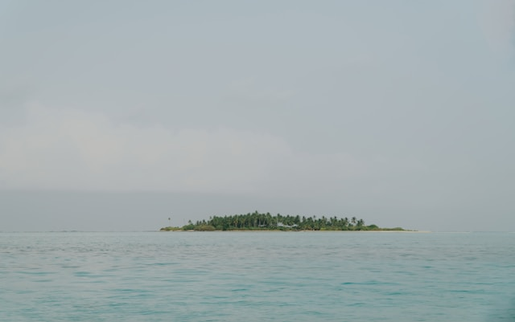
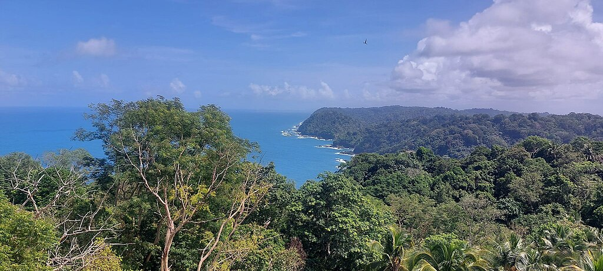

Karimunjawa Islands
An archipelago of 27 islands in the Java Sea, part of Central Java province. A true paradise for diving and snorkeling with crystal-clear waters, vibrant coral reefs, and abundant marine life. The main islands include Karimunjawa, Menjangan Besar, and Cemara Kecil. Perfect for those seeking white-sand beaches and a peaceful escape from the crowds.

Panjang Island
A small, tranquil island located just off the coast of Jepara in Central Java. Famous for its long stretch of white sandy beach and turquoise waters, with virtually no mass tourism. Ideal for a relaxing day trip — snorkeling, birdwatching, or simply enjoying the silence and natural beauty.

Nusa Kambangan
Known as the “Alcatraz of Indonesia,” this island off the southern coast of Central Java (near Cilacap) houses some of the country’s most notorious high-security prisons. Despite its dark reputation, it also features wild, beautiful beaches, caves, and lush jungle. Access is heavily restricted and requires special permits, but the dramatic views from the ferry and its mysterious history make it fascinating.